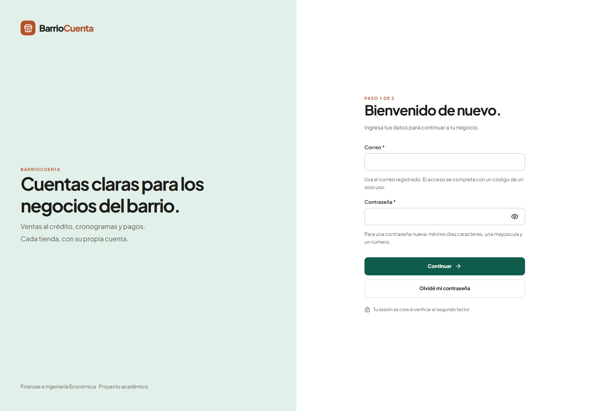
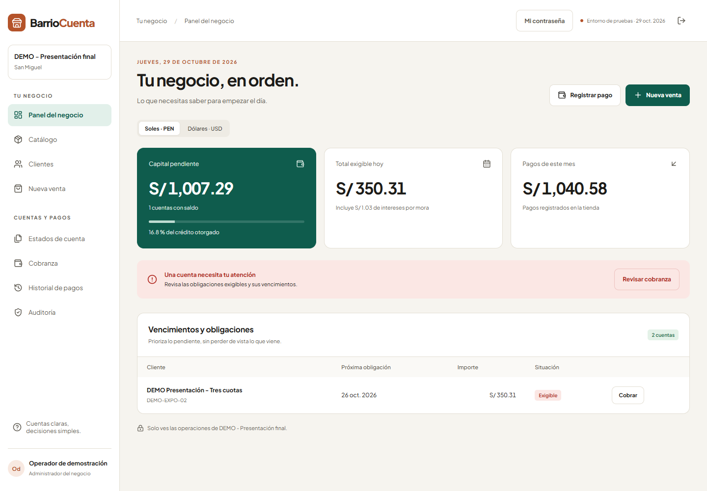
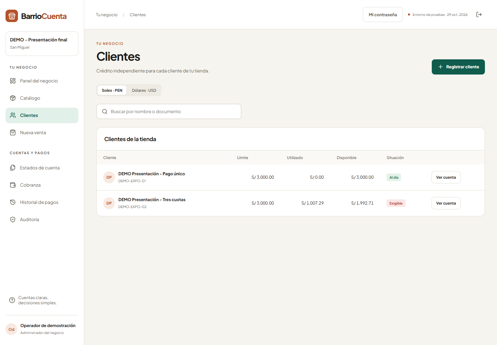
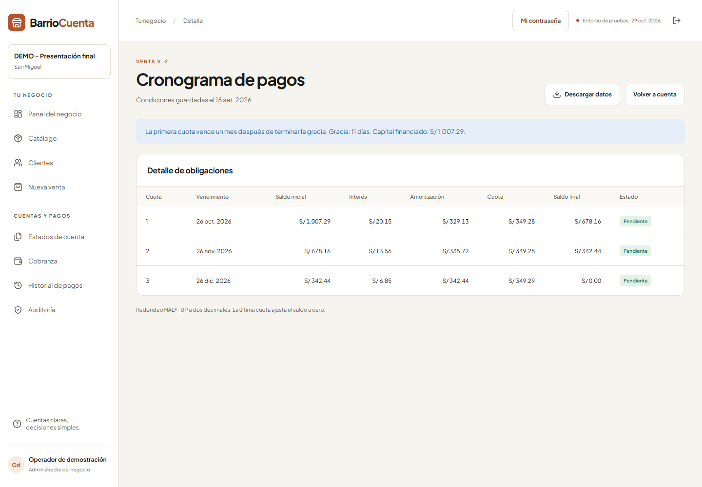
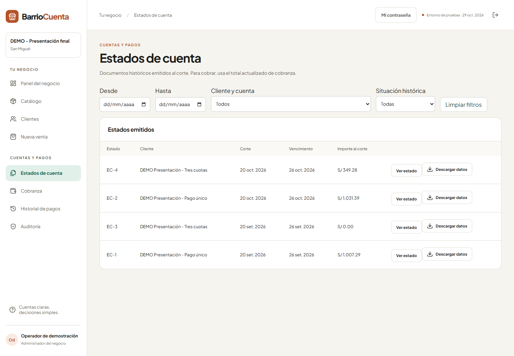
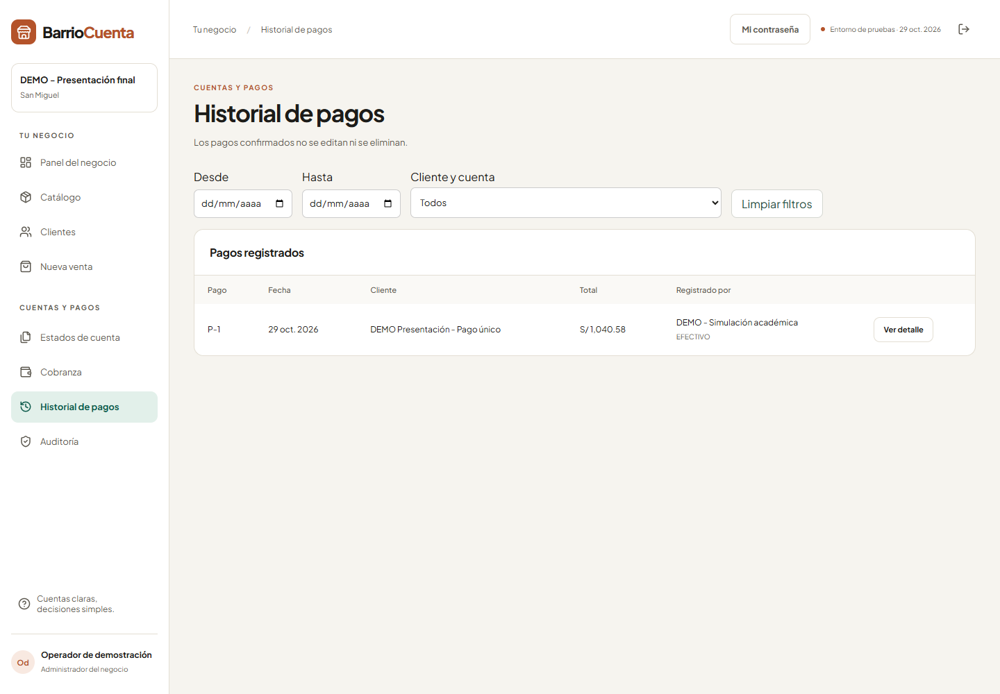

UPC · Finanzas e Ingeniería Económica · Grupo 1 · 29 de octubre de 2026BarrioCuenta
Manual y anexo de construcción
Aplicación académica para administrar ventas al crédito, cuentas corrientes y cobranza por tienda.
Abrir la aplicación publicada · Repositorio del proyecto
1. Recorrido para exponer (8–10 minutos)
- Problema y perfiles (1 min). Explicar el crédito de pequeños comercios y la independencia entre tiendas. Mostrar las tiendas con una cuenta del sistema.
- Negocio y cliente (2 min). Entrar con el administrador de negocio de Mi Tienda Test. Abrir Clientes y buscar “DEMO Presentación”. Mostrar moneda, límite S/ 3,000, tasa compensatoria 2% mensual y mora 3% mensual.
- Cuotas (2 min). Abrir “DEMO Presentación - Tres cuotas”, venta V-2, cronograma. Compra simulada 15/09/2026 por S/ 1,000; gracia 11 días; financiado S/ 1,007.29; cuotas S/ 349.28, 349.28 y 349.29. Primer vencimiento 26/10/2026.
- Estado al corte (1 min). Consultar septiembre y octubre. La primera cuota del plan entra en octubre. Explicar que el estado conserva el corte y la cobranza recalcula la mora a la fecha actual.
- Pago e historial (2 min). Abrir “DEMO Presentación - Pago único”, venta V-1. Mostrar pago ficticio por S/ 1040.58 del 29/10/2026, incluido S/ 33.29 de mora; crédito liberado. Consultar Historial de pagos.
- Validación y cierre (1–2 min). Mostrar la tabla financiera y las pruebas. Si se desea registrar otra venta, usar productos DEMO y un cliente ficticio. No pagar la cuenta de tres cuotas antes de la exposición si se quiere conservar el ejemplo pendiente.
Las ventas históricas son importaciones académicas identificadas en auditoría; no fueron operaciones reales realizadas en septiembre. La mora pendiente cambiará cada día. Para otra fecha, tomar el importe recalculado de Cobranza. La cuenta de negocio existente se usa para operar; no compartir sus claves en la entrega.
2. Manual de uso
Acceso y contraseñas
- Escribir correo y contraseña.
- Introducir el código que llega al correo; revisar spam.
- Si se olvidó la contraseña, usar “Olvidé mi contraseña”. El enlace dura 15 minutos y es de un solo uso.
- “Mi contraseña” cambia la clave conocida y cierra las sesiones anteriores. El botón del ojo muestra u oculta lo escrito.
Administrador del Sistema
Gestiona Tiendas y Usuarios y accesos. Para crear una cuenta operativa, elegir “Administrador del negocio” y su tienda. Para otro gestor de plataforma, elegir “Administrador del sistema”. Este perfil no registra ventas ni pagos de un negocio.
Administrador del negocio
- Catálogo: crear producto o servicio; definir precio de contado y crédito, moneda, modalidad y stock cuando corresponda.
- Clientes: registrar cliente y cuenta. Informar identidad, contacto si existe, consentimiento, moneda, límite, tasas, corte, pago y máximo de cuotas. Una tasa nominal requiere capitalización.
- Nueva venta: elegir cuenta, ítems y cantidades, modalidad y plazo. Revisar la simulación y confirmar. El servidor valida crédito y stock.
- Cuenta: abrir venta y consultar cronograma. Las condiciones históricas quedan conservadas.
- Estados de cuenta: consultar cortes y abrir el reporte. Los cortes pendientes se procesan al visitar la aplicación cuando la configuración automática está activa.
- Cobranza: seleccionar cuenta y pagar el total exigible recalculado; no admite abonos parciales ni anticipa cuotas futuras.
- Historial y auditoría: revisar importe, fecha, medio y distribución del pago.
- Portal: invitar al cliente con un correo real que le pertenezca. Se envía un enlace de activación. No enviar invitaciones a correos ficticios.
Cliente
Activa la invitación, define contraseña y acepta la política; después accede con segundo factor. Solo consulta sus propias cuentas y estados. Los clientes DEMO no tienen un correo real ni portal activado.
3. Revisión del Word y trazabilidad
Se usa la lista interna RF-01 a RF-12 de §3.5 del Word. Esta matriz acredita funciones y evidencia técnica; no sustituye una rúbrica independiente de la profesora, que no se adjuntó como documento separado.
| ID | Requisito | Implementación | Evidencia |
|---|
| RF-01 | Autenticación y perfiles | Contraseña, código por correo, CSRF, cierre de sesión y recuperación. | test_app.py; test_password_access.py |
| RF-02 | Tiendas y asignaciones | Alta/edición de tiendas y administradores de sistema o negocio. | app.py: stores, create_user; pruebas de permisos |
| RF-03 | Catálogo | Productos/servicios, precios PEN/USD, modalidades, stock e imágenes. | test_app.py; test_requirements.py |
| RF-04 | Clientes y condiciones | Identidad, contacto por tienda, consentimiento, límite, tasas y calendario. | test_requirements.py |
| RF-05 | Pago único | Capitalización hasta la fecha base y obligación al vencimiento. | test_app.py; caso publicado V-1 |
| RF-06 | Cuotas francesas | Gracia capitalizada, cuotas mensuales y ajuste final. | test_requirements.py; caso publicado V-2 |
| RF-07 | Validaciones | Límite, stock, modalidad, plazo, idempotencia y bloqueo transaccional. | test_app.py; test_requirements.py |
| RF-08 | Estados al corte | Generación de cortes pendientes, detalle histórico y documentos únicos. | test_requirements.py; test_presentation.py |
| RF-09 | Mora | Tasa moratoria independiente, días reales/30 y desglose. | test_app.py; VALIDACION-FINANCIERA.json |
| RF-10 | Pago completo | Rechazo de abonos parciales, aplicación, historial y liberación de capital. | test_presentation.py; test_requirements.py |
| RF-11 | Portal y aislamiento | Activación por invitación, cuentas propias y autorización en servidor. | test_app.py; test_requirements.py |
| RF-12 | Trazabilidad | Historial, condiciones de venta conservadas y auditoría por ámbito. | test_requirements.py; modelos Sale, Audit |
El reloj de pruebas se limita al desarrollo. Los estados y la cobranza públicos usan la fecha real. Stock, idempotencia y calendario complementan el alcance como decisiones del equipo. No se añaden pasarelas, impuestos, kardex, conversión automática de moneda ni integración bancaria. No se acredita certificación legal o de seguridad, ni sprints ejecutados o porcentajes de IA medidos que no tengan evidencia.
4. Verificación financiera independiente
Se recalcularon los ocho casos del Word con Decimal a 50 dígitos, sin llamar al motor para obtener los valores de referencia. Se compararon financiado y cada fila (interés, amortización, cuota y saldo) contra la aplicación. Se usa HALF_UP a dos decimales y último pago ajustado.
Fórmulas: TEM efectiva anual: (1 + TEA)^(30/360) − 1. TEM nominal anual: (1 + j·c/360)^(30/c) − 1. Capital tras gracia: Pg = P·(1+i)^(g/30). Cuota francesa: C = Pg·i / [1−(1+i)^(-n)]. Mora: M = obligación·[(1+im)^(d/30)−1]. Para tasa cero, C = Pg/n.
| Caso | Capital | Tasa | Gracia | Financiado | Cuotas (S/) | Resultado |
|---|
| A1 | 1000 | 24% effective | 11 | 1006.59 | 347.74, 347.74, 347.75 | Coincide |
| A2 | 500 | 18% effective | 35 | 508.11 | 88.85, 88.85, 88.85, 88.85, 88.85, 88.85 | Coincide |
| A3 | 2500 | 30% effective | 31 | 2557.12 | 674.99, 674.99, 674.99, 675.00 | Coincide |
| A4 | 900 | 0% effective | 11 | 900.00 | 300.00, 300.00, 300.00 | Coincide |
| B1 | 1000 | 24% nominal | 11 | 1007.29 | 349.28, 349.28, 349.29 | Coincide |
| B2 | 1200 | 36% nominal | 35 | 1242.72 | 229.74, 229.74, 229.74, 229.74, 229.74, 229.73 | Coincide |
| B3 | 800 | 18% nominal | 31 | 812.22 | 210.61, 210.61, 210.61, 210.62 | Coincide |
| B4 | 1500 | 12% nominal | 11 | 1505.35 | 259.53, 259.53, 259.53, 259.53, 259.53, 259.53 | Coincide |
Ejemplo adicional: obligación S/ 1,007.29, mora mensual 3% y 4 días: S/ 3.98. Resultados completos. Evidencia de los casos publicados.
5. Evidencia y pruebas
Pruebas de interfaz en Chrome y Edge, con el mismo código y una base SQLite temporal: acceso con segundo factor, clientes, cronograma, estados e historial; sin errores JavaScript. No se enviaron correos reales durante esas pruebas. La configuración y las tablas del escenario publicado se comprobaron aparte sobre PostgreSQL.
Resultado de las pruebas automáticas y compilación. El caso nuevo prueba importación sin duplicados, pago completo mediante la API, rechazo de pago insuficiente, repetición de pago y consultas de estados.
Acceso y recuperación

Copia local ficticia de la versión entregada; captura del 29/10/2026.Panel del negocio

Copia local ficticia de la versión entregada; captura del 29/10/2026.Clientes de demostración

Copia local ficticia de la versión entregada; captura del 29/10/2026.Cronograma francés

Copia local ficticia de la versión entregada; captura del 29/10/2026.Estados de cuenta

Copia local ficticia de la versión entregada; captura del 29/10/2026.Historial del pago ficticio

Copia local ficticia de la versión entregada; captura del 29/10/2026.6. Instalación y entrega
El ZIP contiene código, requisitos Python, dependencias npm declaradas, Dockerfile, configuración Render, manuales, pruebas y este anexo. No contiene exportaciones de la base pública, sesiones ni credenciales reales de los proveedores.
Para una copia local con Python y Node instalados, abrir PowerShell en la raíz:
python -m venv .venv
.venv\Scripts\python -m pip install -r requirements.txt
npm ci
npm run build
$env:APP_MODE="development"
$env:MAIL_PROVIDER="local"
.venv\Scripts\python -m backend.seed
.venv\Scripts\python -m backend.app
Abrir http://127.0.0.1:5000. La siembra de ejemplo solo actúa si la base está vacía; sus accesos son rosa@demo.local (negocio), pedro@demo.local (otro negocio), admin@demo.local (sistema) y juan@demo.local (cliente), con contraseña ficticia Barrio2026!. Esos accesos corresponden a la copia local; no son cuentas públicas. En desarrollo local el código de verificación aparece en pantalla.
Para la nube, consultar el manual de despliegue. Las notas que dicen “publicación pendiente” pertenecen a la preparación inicial; la web del encabezado ya está publicada. Las claves se configuran en el proveedor, nunca en GitHub.
Antes de exponer
- Comprobar acceso al correo y segundo factor con suficiente anticipación.
- Abrir la web y verificar la tienda de negocio seleccionada.
- Conservar estas capturas y el manual como respaldo si falla la conexión.
- Compartir el ZIP y el informe original junto con este anexo.
Documento generado a partir del código, el Word suministrado y las pruebas ejecutadas. No se creó acceso para la profesora ni se modificó el informe original. La rotación de las claves compartidas anteriormente sigue siendo una tarea del titular en sus proveedores; no se ha afirmado que esté hecha.